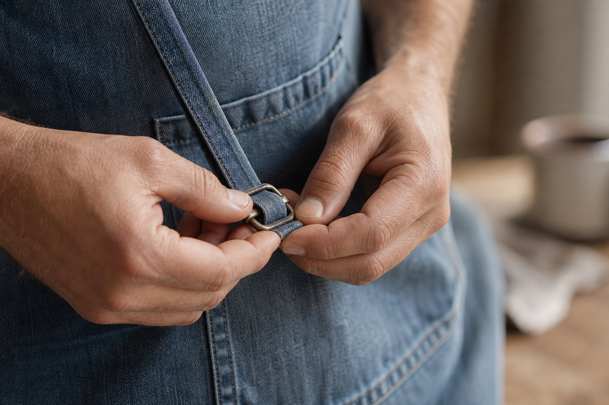
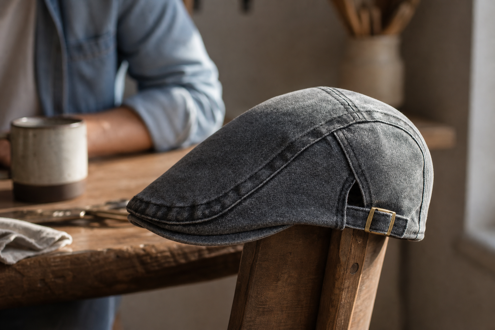
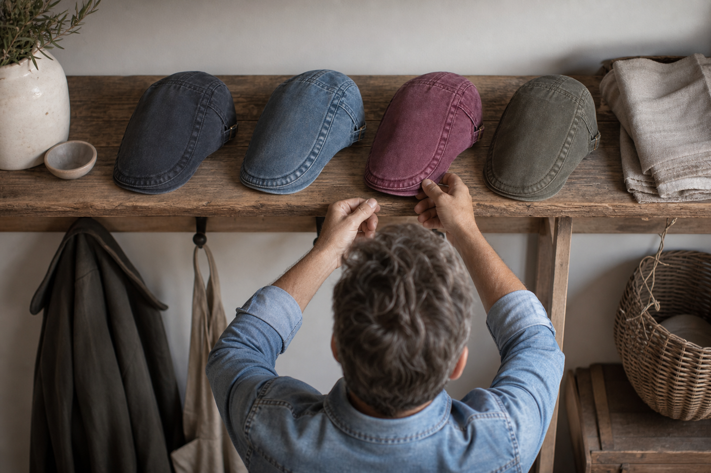
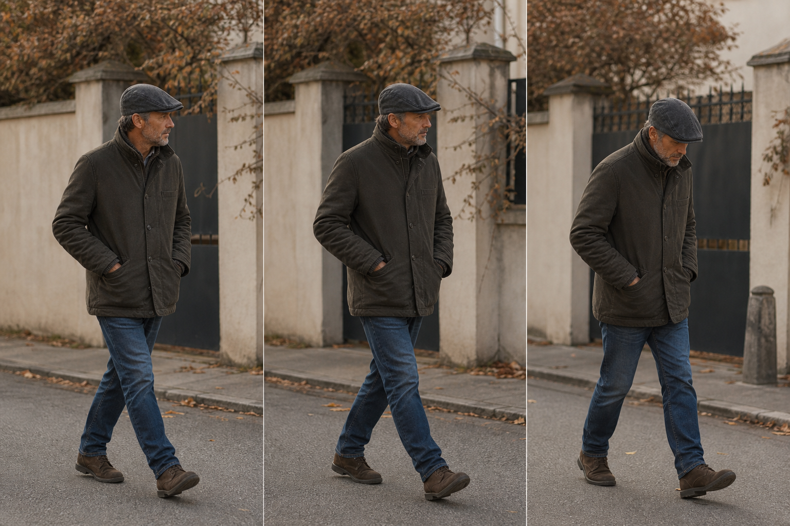
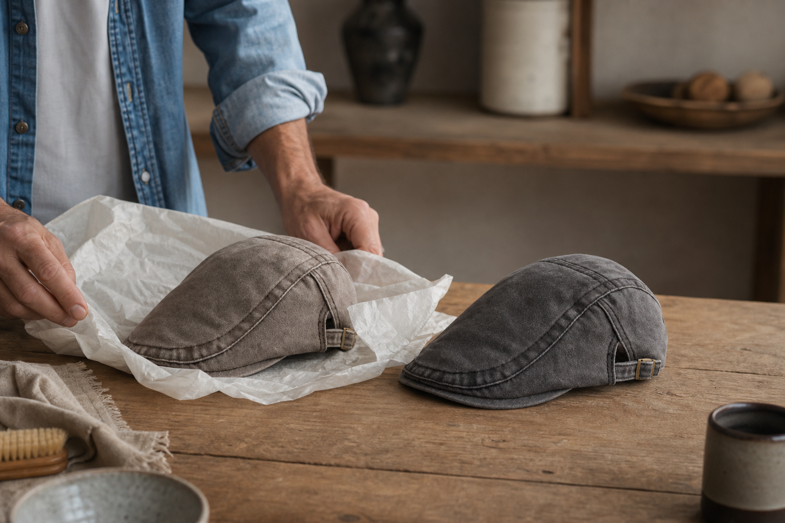

The light end
The Ashcroft, The Mariner, The Cotswold. Easy, everyday, warm months.
From the man who made it
Made to fit. Washes for all year round. $29.99 instead of $59.98.
Straight with you: there's no size chart here. Nothing to measure. I make one cut, and it's made to fit.
The rest of this page is that decision, the washed denim I chose, and the 100 days you get to disagree with me.
30.000+ men are already wearing one. $29.99 instead of $59.98 right now, shipping free wherever you are.
$29.99 today, free worldwide shipping, 100 days to send it back
The honest bit
Before I tell you anything about this collection, I should tell you what started it.
For years I bought flat caps that sat on my head like a lid, or swallowed the top half of my face. Same size on the label, two completely different caps. I'll admit I blamed my own head for a long time.
So I did what the sizing charts tell you to do. Tape measure round the forehead, write the number down, convert it, hover over the size that's supposedly mine. Then a box arrives, and it's wrong, and the whole thing goes back.
I wasn't trying to start anything. I just wanted one cap that fit my own head without a maths problem in front of it. Turns out nobody was making it.
The sizing lottery
Ask ten men their measurement. You'll get ten guesses and a shrug.
Here's the game. You find a cap you like, then you're asked for a number you've never had a reason to know. So you pick the middle one and hope.
It turns up perched on top, or it swallows your ears. Either way you're queuing at the post office to send back a hat you already liked. I lost that lottery more than once, and I got tired of pretending that was normal.
The one decision
A side-adjuster and a tan suede trim do the job a size chart never did.
Sizes were the problem, so I got rid of them. One cut, one head, yours.
The side-adjuster sits under the tan suede trim. You pull it to where the cap feels right the first time you put it on, and that's the last time you think about it. Set it once and it stays put.
No tape measure. No converting inches to centimetres to some letter on a label. Nothing to send back for a size up. I'll admit it made the making harder and the choosing easier, and I'd make that trade again.
Nothing to measure before you order

The shape
A cap should follow your face, not balance on top of it.
Most caps I tried sat high and perched, like a lid on a jar. It's the difference between a cap that looks like it belongs to you and one that looks borrowed.
So I cut mine to sit low, with a shallow crown and a peak that comes down over the brow. It follows the line of your face instead of fighting it. Lived-in, never a costume.
I'll admit it took a few goes on my own head to get right. But that low sit is why men who swore caps didn't suit them keep one on all day.
Why denim
I'll be straight with you: tweed felt like I was dressing up as someone's grandfather.
Every flat cap I tried on made me look like I'd come from a costume department. Stiff, formal, waiting for an occasion I was never going to have.
So I went to washed denim. It arrives already lived-in. No breaking in, no waiting for it to look like yours, because it looks worn from the first morning. That's real character rather than a period outfit.
The tan suede trim is the one deliberate touch. It stops the cap being plain denim and keeps it a cap you'd wear to the pub, the school gate or the office, without anyone deciding you're in fancy dress.

The washes
From an everyday light blue to a burgundy that isn't afraid of colour.
I don't design a range. I make the wash I want next, and if I'd wear it all week it goes on the page. That's how nine of them happened.
The Ashcroft is the one most men start with, a light blue that goes with whatever you already own. At the other end there's The Claret, a burgundy that isn't afraid of colour and knows it. Between them: The Mariner, The Blackthorn, The Cotswold, The Chestnut, The Sherwood, The Admiral, The Onyx Denim.
Every one is washed denim, lived-in from the first wear, never a costume. The list keeps growing, because I keep wanting new ones.
The Ashcroft, The Mariner, The Cotswold. Easy, everyday, warm months.
The Blackthorn, The Sherwood, The Onyx Denim. Darker washes for darker coats.
The Claret and The Chestnut, for the days you'd rather not disappear.

All year round
Same cut, same fit. The wash is what changes with the month.
A cap you only wear in autumn is a cap you wear six weeks a year. Mine sit in the hallway all twelve months, and I reach for a different one depending on what I'm walking into.
Light for summer mornings and anything outdoors. Darker for the school run in the rain, the pub, the drive north. Same lived-in denim either way, never a costume.
I'll admit the honest consequence: one is rarely enough. Most men who buy a light blue come back for something darker before the year is out.

Everything above is stated on this page and nowhere else does it need dressing up. Read it, then carry on.
The doubts, out loud
Four things men hesitate over before they order. Here they are, in my own words.
Nothing is wrong with it. $59.98 is the regular price and $29.99 is the summer offer, running on all nine washes at once. I'd rather sell three caps at half than one at full and spend the difference telling you why it's worth double.
The rest of the hesitation is usually about your head, the denim, or the man you're buying it for. I'll take them one at a time.
That's what I thought about my own head, and it's exactly why there's a side-adjuster. Set it once and it stays put. No tape measure, no size to convert.
Only if it looks new. These are washed to arrive lived-in, so it reads like something you've owned for years. Never a costume.
You don't need it. There's one cut, he sets it himself in about four seconds, and you pick the wash instead of the number.
Then you've got 100 days, and the risk sits with me rather than you.
For the gift buyer
Nothing to measure. Nothing to ask him. Nothing to get wrong.
You know the man. He'll wear the same jacket for nine years and call it fine. Ask him what he wants and he'll say nothing, and mean it.
So here's the part that makes this easy: there's no size to get wrong. You don't need his measurements, and you don't need to invent a reason to put a tape measure round his head in November.
The only thing left to choose is the wash. And with 50% off, buy 2 flat caps and you get a third free, so the second wash costs you nothing awkward. One for him, one for you, one for the man you forgot.
| The Washed Denim Collection | Alternative | |
|---|---|---|
| What you need to know about him | His name on the parcel | His head size, in centimetres, correctly |
| The awkward question first | None | "What size hat are you?" |
| Price per cap | $29.99 instead of $59.98 | Full price, one cap |
| Buying two | Buy 2, get 1 free | Pay for three |

The 100-Day Fit Guarantee
That part is on me, not on you.
I'll be straight with you: I can't put the cap on your head from here. So I do the next best thing. Wear it for 100 days. Not a fitting-room minute in front of a mirror, a hundred actual days.
If it doesn't sit right, email help@ashcroft-flatcaps.com and I refund you. No argument, no photographs of the box.
Shipping is free worldwide, no minimum. Which means the only thing you can lose here is the time it takes to try it.
100 days of my risk instead of yours
Straight answers
No sales voice here. Just the facts, in my own words.
If yours isn't below, write to help@ashcroft-flatcaps.com. Someone answers around the clock, seven days a week.
Put the cap on, pull the adjuster until it sits right, and leave it. Set it once and it stays put. No tape measure, no chart.
That's what the adjuster is for. It's made to fit on any head, which is why I stopped making sizes at all.
The everyday light blue if you want one you'll reach for daily. The Claret or The Blackthorn if you'd rather it showed.
Nothing. Free worldwide shipping on every order, no minimum. You can follow it with Track my order.
You have 100 days to send it back for your money. Email help@ashcroft-flatcaps.com and we'll sort the return.
One last thing
No tape measure. No guessing. 100 days that are my risk, not yours.
You've read everything I'd say across a table. All that's left is choosing a colour.
Set it once, wear it all year. If it doesn't sit right, you send it back and I refund you.
$29.99 instead of $59.98, free worldwide shipping